Diplomado Visualización de Datos
R, estadística descriptiva, ggplot2
Pacha & Joshua Kunst, 2019
Importante!!!
https://www.meetup.com/es/rladies-scl/
https://twitter.com/hashtag/datosdemiercoles?src=hash
https://github.com/rivaquiroga/RLadies-Santiago/blob/master/2018-04_taller_primeros_pasos_en_R.Rmd
¿Por que visualización?


Definición técnica (Posible)
Representación gráfica de datos codificando la información como: posición, tamaño, formas, colores

Muchos sabores:

Cosas importantes sobre visualización de datos:
- Lleva información, es un mensaje
- Ejercicio mental para interpretar o decodificar(!!) información
- No siempre es el fin
- Herramienta exploratoria
- Distintas visualizaciones en mismos datos / Distintas historias
library(tidyverse)
library(scales)
data(gapminder, package = "gapminder")
dg <- gapminder %>%
distinct(country, continent) %>%
count(continent)
p <- ggplot(dg) +
geom_col(aes(continent, n, fill = continent), width = 0.5) +
scale_fill_viridis_d(option = "D", guide = FALSE) +
labs(
title = "Africa tiene más países que el resto de continentes",
subtitle = "Un interesante subtitulo para contexto y dar detalles quizás puede ser\nmás largo pero quien soy yo para decir que se debe y lo que no",
caption = "Importante mencionar la fuente, en caso contrario no me creen",
x = "Contienentes",
y = "Países"
) +
theme(plot.subtitle = element_text(size = 9))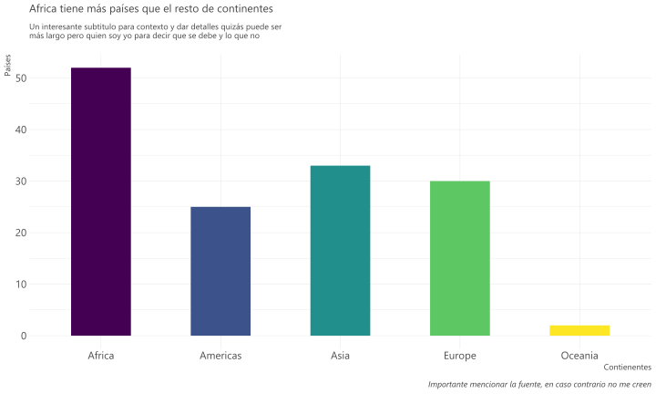
dg2 <- gapminder %>%
group_by(country) %>%
filter(row_number() == n()) %>%
ungroup()
p2 <- ggplot(dg2) +
geom_point(aes(lifeExp, gdpPercap, size = pop, color = continent), alpha = 0.7) +
scale_color_viridis_d(option = "A") +
scale_y_sqrt(name = "GDP per Capita", labels = comma, limits = c(NA, NA)) +
scale_x_continuous(name = "Esperanza de vida", labels = comma, limits = c(NA, NA)) +
scale_size(labels = comma, range = c(3, 10), breaks = c(100, 1000, 2000)*1e6) +
labs(title = "Esperanza de vida y GDP per capita ")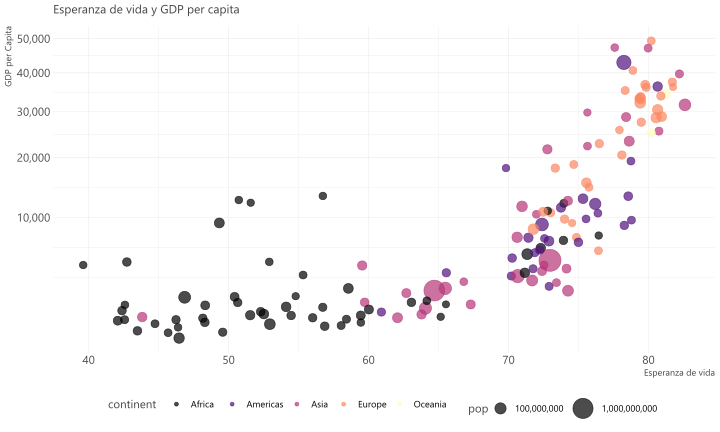
legosets <- read_csv("https://raw.githubusercontent.com/seankross/lego/master/data-tidy/legosets.csv")
p3 <- ggplot(legosets) +
geom_point(aes(Pieces, USD_MSRP, size = Minifigures, color = Year), alpha = 0.7) +
scale_color_viridis_c(option = "A") +
scale_y_sqrt(name = "Precio USD", labels = dollar, limits = c(0, 300)) +
scale_x_sqrt(name = "Piezas", labels = comma, limits = c(0, 2000)) +
labs(title = "Precios según piezas")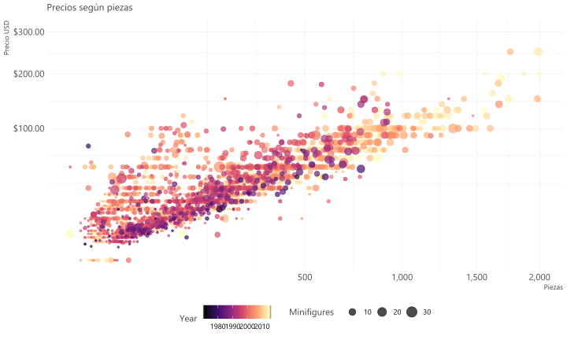
lg2 <- legosets %>%
mutate(year2 = floor(Year/10)*10) %>%
select(year2, Year, everything())
p4 <- ggplot(lg2) +
geom_jitter(aes(factor(year2), USD_MSRP, size = Pieces, color = Year), alpha = 0.5, width = 0.25) +
scale_color_viridis_c(option = "A") +
scale_y_continuous(name = "Precio USD", labels = dollar, limits = c(0, 300)) +
scale_x_discrete(name = "Década") +
labs(title = "Precios/Década")
Ejercicio
¿Existe el mejor gráfico? ¿Cuál de las siguientes formas funciona mejor con el títutlo?
La región del sur exhibe el mayor crecimiento
Adapatado del tweet de Lisa Charlotte Rost que a su vez está viene del ejemplo del libro “Show me the numbers” de Stephen Few
Los datos:
| region | Q1 | Q2 | Q3 | Q4 |
|---|---|---|---|---|
| sur | 100 | 150 | 225 | 290 |
| norte | 150 | 160 | 180 | 300 |
| este | 180 | 200 | 200 | 240 |
| oeste | 250 | 250 | 300 | 170 |
Opción #1
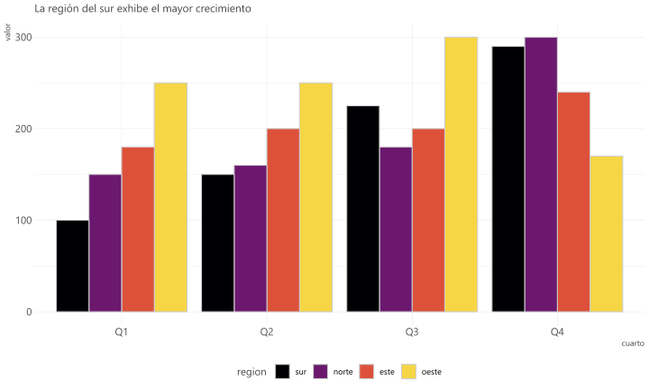
Opción #2
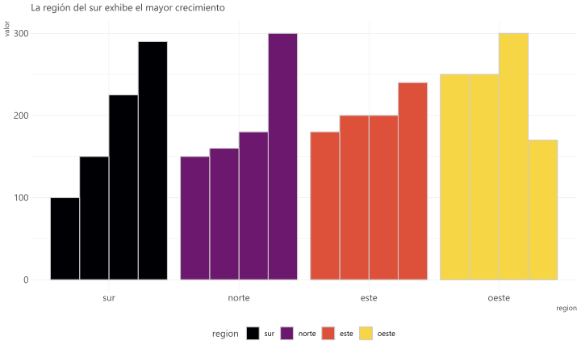
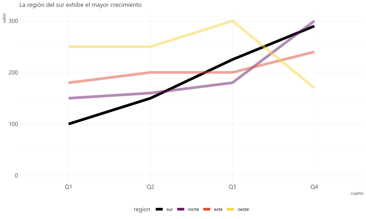
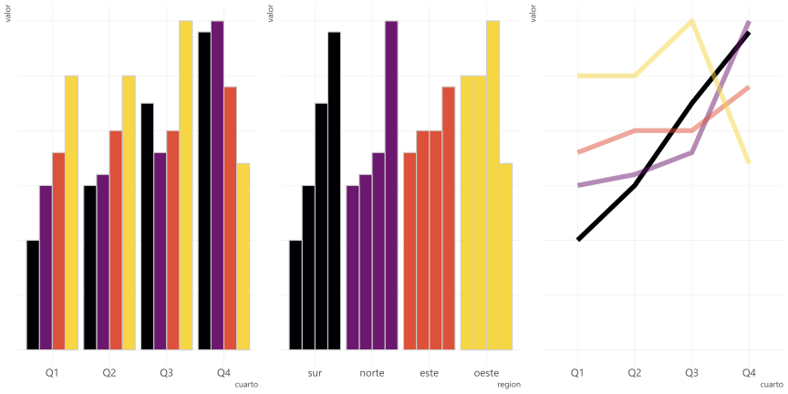
(Posible) Respuesta
No. Dependerá de tu mensaje, de tu historia.
Recomendaciones Técnicas
y algunas Misceláneas
Pie Charts (o tortas)

Usuales dificultades
- Compara áreas
- Ejercicio mental de rotar para comparar categorías
Es muy usado es el pie chart
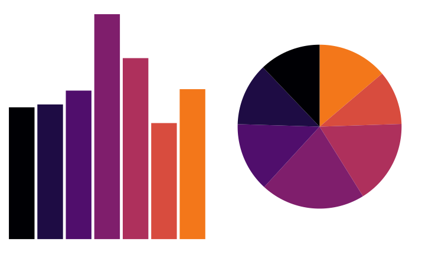
Es muy (ab)usado es el pie chart
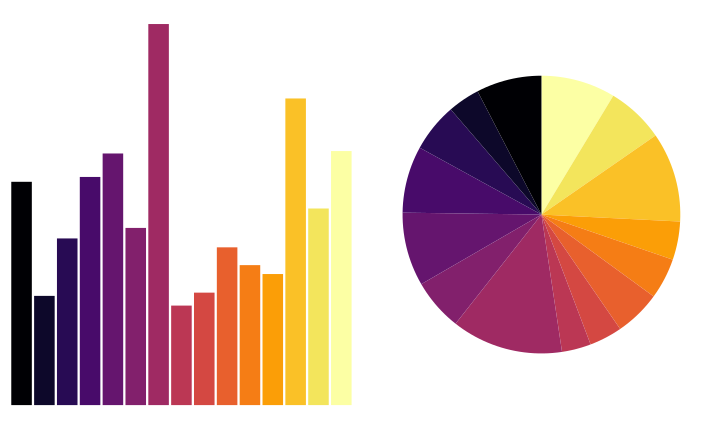

Puntos de Referencia


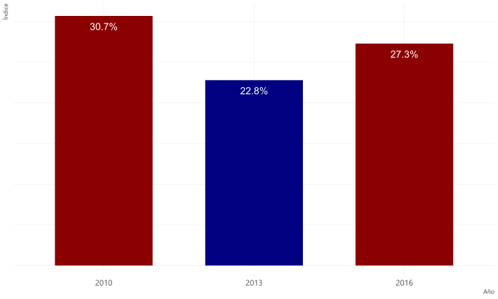
Convenciones
Ejercicio 2. Encuentre las anomalías

Rápidamente ¿Dónde se produce el máximo?

Mas de lo mismo:
https://twitter.com/lizardbill/status/1127005323636686848/photo/1
Tipografía
¿Conocen a …?
Arial
Times New Roman
Comic Sans

Según comic sans criminal:
- Fuentes tienen personalidad
- Tiene un propósito
- Armonía en el universo
Colores
La misma idea de las convenciones!
1 2 3 4 5 6
- Dar foco y llamar la atención
- Debiesen ser corcondantes con el dato
df <- data_frame(
pais = c("Chile", "Colombia", "Argentina", "Bolivia"),
crecimiento = c(6, 5, 4, 4)/10
) %>%
mutate(pais = fct_inorder(pais))
p5 <- ggplot(df) +
geom_col(aes(pais, crecimiento, fill = pais), width = 0.5) +
scale_y_continuous(labels = percent) +
scale_fill_manual(values = sample(c("#C8152B", "#FDD116", "#4F75AF", "#2C9A05"))) +
theme(legend.position = "none")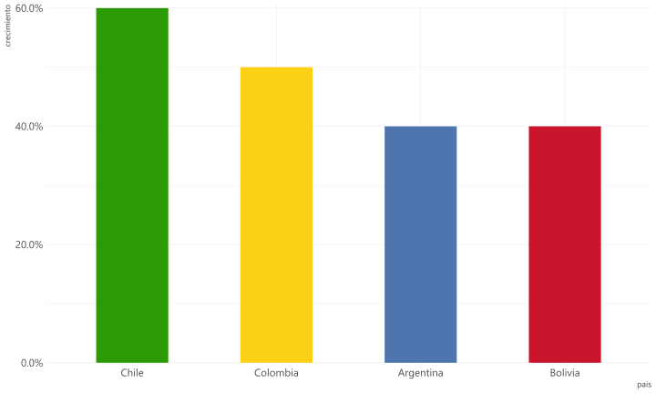

p7 <- ggplot(legosets) +
geom_point(aes(Pieces, USD_MSRP, size = Minifigures, color = Year), alpha = 0.7) +
scale_color_viridis_c(option = "A") +
scale_y_sqrt(name = "Precio USD", labels = dollar, limits = c(0, 300)) +
scale_x_sqrt(name = "Piezas", labels = comma, limits = c(0, 2000)) +
labs(title = "Precios según piezas")lg3 <- legosets %>%
mutate(Themesw = Theme == "Star Wars")
p8 <- ggplot(lg3) +
geom_point(aes(Pieces, USD_MSRP, size = Minifigures, color = Themesw), alpha = 0.7) +
scale_color_manual(guide = "none", values = c("gray90", "darkred")) +
scale_y_sqrt(name = "Precio USD", labels = dollar, limits = c(0, 300)) +
scale_x_sqrt(name = "Piezas", labels = comma, limits = c(0, 2000)) +
labs(title = "Precios según piezas")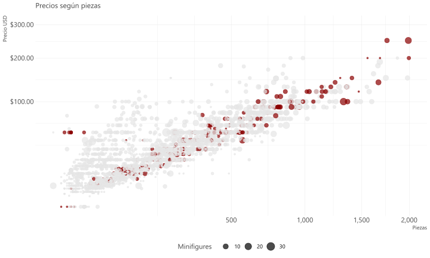
Etiquetas
p9 <- ggplot(dg2) +
geom_point(aes(lifeExp, gdpPercap, size = pop, color = continent), alpha = 0.7) +
scale_color_viridis_d(option = "A") +
scale_y_sqrt(name = "GDP per Capita", labels = comma, limits = c(NA, NA)) +
scale_x_continuous(name = "Esperanza de vida", labels = comma, limits = c(NA, NA)) +
scale_size(labels = comma, range = c(3, 10), breaks = c(100, 1000, 2000)*1e6) +
labs(title = "Esperanza de vida y GDP per capita ")p10 <- ggplot(dg2) +
geom_point(aes(lifeExp, gdpPercap, size = pop, color = continent), alpha = 0.7) +
geom_label(aes(lifeExp, gdpPercap, label = country, size = pop, color = continent), alpha = 0.7) +
scale_color_viridis_d(option = "A") +
scale_y_sqrt(name = "GDP per Capita", labels = comma, limits = c(NA, NA)) +
scale_x_continuous(name = "Esperanza de vida", labels = comma, limits = c(NA, NA)) +
scale_size(labels = comma, range = c(3, 10), breaks = c(100, 1000, 2000)*1e6) +
labs(title = "Esperanza de vida y GDP per capita ")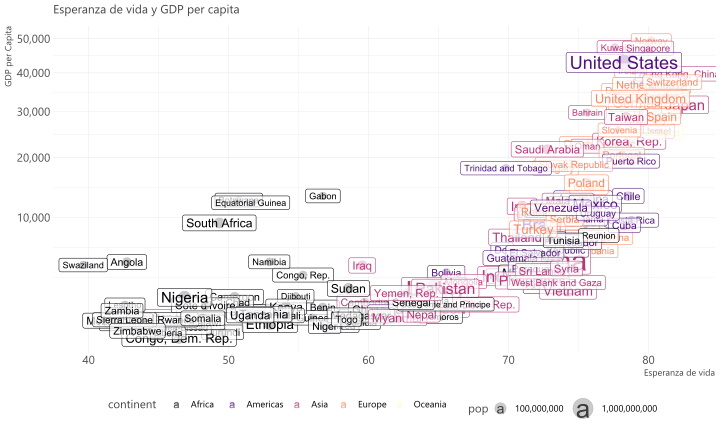
http://www.ggplot2-exts.org/gallery/
library(ggrepel)
p11 <- ggplot(dg2) +
geom_point(aes(lifeExp, gdpPercap, size = pop, color = continent), alpha = 0.7) +
geom_label_repel(aes(lifeExp, gdpPercap, label = country, size = pop, color = continent), alpha = 0.7) +
scale_color_viridis_d(option = "A") +
scale_y_sqrt(name = "GDP per Capita", labels = comma, limits = c(NA, NA)) +
scale_x_continuous(name = "Esperanza de vida", labels = comma, limits = c(NA, NA)) +
scale_size(labels = comma, range = c(3, 10), breaks = c(100, 1000, 2000)*1e6) +
labs(title = "Esperanza de vida y GDP per capita ")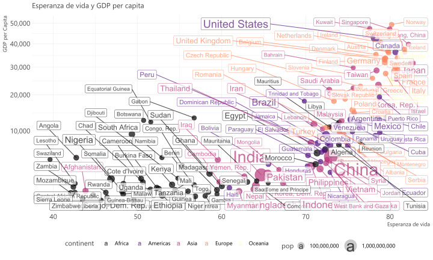
dg3 <- dg2 %>%
sample_n(10)
p12 <- ggplot(dg2) +
geom_point(aes(lifeExp, gdpPercap, size = pop, color = continent), alpha = 0.7) +
geom_label_repel(aes(lifeExp, gdpPercap, label = country), color = "gray40", data = dg3, force = 100) +
scale_color_viridis_d(option = "A") +
scale_y_sqrt(name = "GDP per Capita", labels = comma, limits = c(NA, NA)) +
scale_x_continuous(name = "Esperanza de vida", labels = comma, limits = c(NA, NA)) +
scale_size(labels = comma, range = c(3, 10), breaks = c(100, 1000, 2000)*1e6) +
labs(title = "Esperanza de vida y GDP per capita ")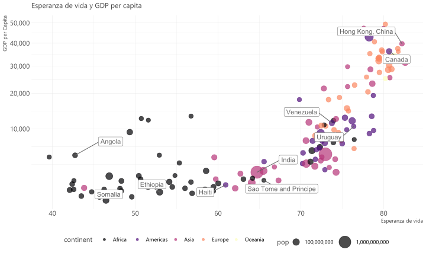
Formalizando/Visualizando con ggplot2
ggplot2
Características:
- Paquete para visualizar datos mediante capas
- Es muy poderoso y flexible
- Se carga junto al
tidyverse - No es la única opción en R para graficar
Datos
library(tidyverse)
library(gapminder)
data(gapminder)
paises <- gapminder %>%
filter(year == max(year))
paises## # A tibble: 142 x 6
## country continent year lifeExp pop gdpPercap
## <fct> <fct> <int> <dbl> <int> <dbl>
## 1 Afghanistan Asia 2007 43.8 31889923 975.
## 2 Albania Europe 2007 76.4 3600523 5937.
## 3 Algeria Africa 2007 72.3 33333216 6223.
## 4 Angola Africa 2007 42.7 12420476 4797.
## 5 Argentina Americas 2007 75.3 40301927 12779.
## 6 Australia Oceania 2007 81.2 20434176 34435.
## 7 Austria Europe 2007 79.8 8199783 36126.
## 8 Bahrain Asia 2007 75.6 708573 29796.
## 9 Bangladesh Asia 2007 64.1 150448339 1391.
## 10 Belgium Europe 2007 79.4 10392226 33693.
## # ... with 132 more rowsCreando un gráfico :)
Mejorando un gráfico
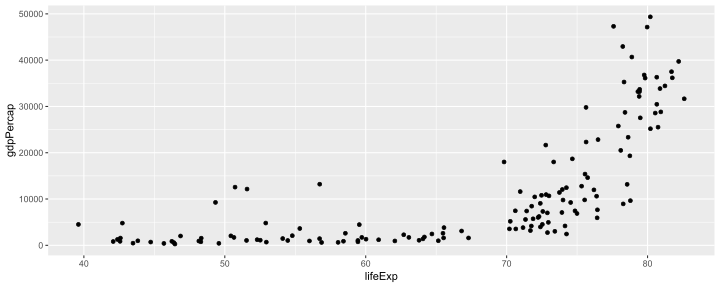
Que sucedió?
ggplot()crea un sistema de coordenadas al cual se pueden agregar capasggplot(data = paises)da un grafico vacío pues no agregamos capasgeom_point()agrega una capa de puntos al gráfico usando las filas depaises- Cada función
geom_algotiene un argumento de mapping que define cómo se asignan o se “mapean” las variables del conjunto de datos a propiedades visuales delgeom_algo - El argumento de mapping siempre aparece emparejado con
aes(), y los argumentosxeyespecifican qué variables asignar a los ejesxey

https://www.sharpsightlabs.com/blog/r-package-think-about-visualization/
Podemos setear las propiedades estéticas de tu geom manualmente:
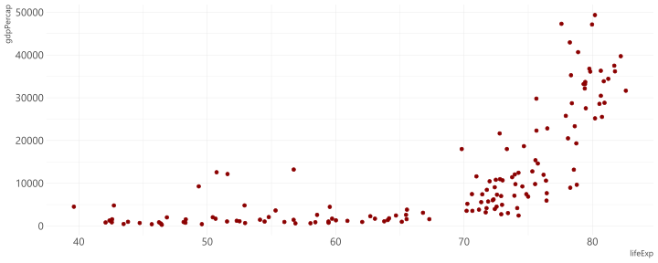
En este caso un punto no solo puede poseer x e y, puede tener tamaño dado por una variable
ggplot(data = paises) +
geom_point(mapping = aes(x = lifeExp, y = gdpPercap, size = pop), color = "darkred")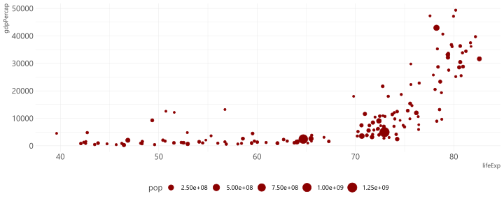
Quizás en lugar de setar color fijo, podemos asignarlo segun una variable
ggplot(data = paises) +
geom_point(mapping = aes(x = lifeExp, y = gdpPercap, size = pop, color = continent))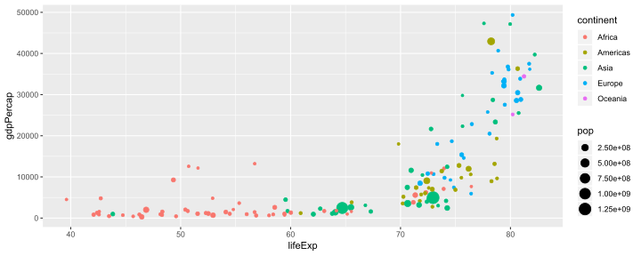
O realizar facets/paneles
ggplot(data = paises) +
geom_point(mapping = aes(x = lifeExp, y = gdpPercap, size = pop)) +
facet_wrap(vars(continent))
Estadística Descriptiva
Ejercicio
Supongamos que debemos decidir en curso debe ir nuestro hijo/sobrino/simil, entre el curso narnajo o azul. Nos dicen que el promedio de notas finales del año anterior para cada curso fue.
| curso | cantidad_de_alumnos | promedio |
|---|---|---|
| azul | 50 | 5.23 |
| naranjo | 50 | 4.99 |
Más información:
| curso | cantidad_de_alumnos | promedio | maxima_nota |
|---|---|---|---|
| azul | 50 | 5.23 | 7.00 |
| naranjo | 50 | 4.99 | 5.53 |
Pero pero pero
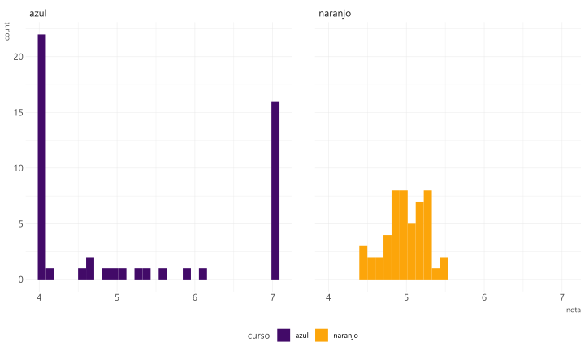
Quizás un poco más de información ayuda
| estadistico | azul | naranjo |
|---|---|---|
| cantidad_de_alumnos | 50.00 | 50.00 |
| desviacion_estandiar | 1.33 | 0.27 |
| maximo | 7.00 | 5.53 |
| mediana | 4.65 | 5.00 |
| minimo | 4.00 | 4.40 |
| promedio | 5.23 | 4.99 |
Algunas frases
- El promedio no vale mucho sin un indicador de variablidad
- Guiarse por un valor solamente es usualmente peligroso para tomar de decisiones
Datasaurus

No es que no le creamos al promedio u otro indicador, sino hay que saber que es lo que mide/nos dice/cuenta
Anscombe
## x1 x2 x3 x4 y1 y2 y3 y4
## 1 10 10 10 8 8.04 9.14 7.46 6.58
## 2 8 8 8 8 6.95 8.14 6.77 5.76
## 3 13 13 13 8 7.58 8.74 12.74 7.71
## 4 9 9 9 8 8.81 8.77 7.11 8.84
## 5 11 11 11 8 8.33 9.26 7.81 8.47
## 6 14 14 14 8 9.96 8.10 8.84 7.04
## 7 6 6 6 8 7.24 6.13 6.08 5.25
## 8 4 4 4 19 4.26 3.10 5.39 12.50
## 9 12 12 12 8 10.84 9.13 8.15 5.56
## 10 7 7 7 8 4.82 7.26 6.42 7.91
## 11 5 5 5 8 5.68 4.74 5.73 6.89anscombe_tidy <- anscombe %>%
mutate(observation = seq_len(n())) %>%
gather(key, value,-observation) %>%
separate(key, c("variable", "set"), 1, convert = TRUE) %>%
mutate(set = c("I", "II", "III", "IV")[set]) %>%
spread(variable, value)
p13 <- ggplot(anscombe_tidy, aes(x, y)) +
geom_smooth(method = "lm", se = FALSE, color = "darkred", alpha = 0.1, size = 1.5) +
geom_point(size = 3, shape = 21, fill = "gray90") +
facet_wrap( ~ set) 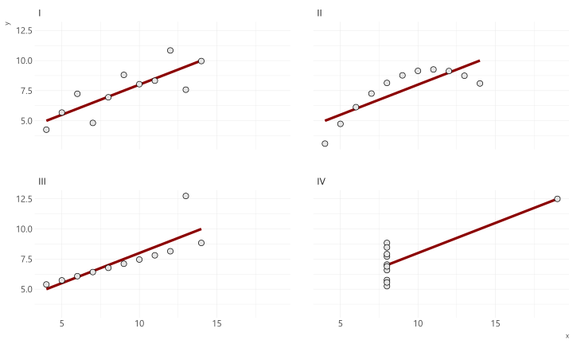
Analisis Exploratorio de Datos
Distribución
Distribución se relaciona a la forma que varían los datos de medición en medición
Estudiando la forma de como se distribuyen los datos podemos ver cuales son los más comunes, o ver si exsiten casos raros
Y variará principalmente del tipo de variable analizada: categórica o continua
Ejercicio
# cargar paquete con funciones que nos ayudarán
library(tidyverse)
# leo datos desde una url
legos <- read_csv("https://raw.githubusercontent.com/seankross/lego/master/data-tidy/legosets.csv")
# primer paso! paso #1
glimpse(legos)## Observations: 6,172
## Variables: 14
## $ Item_Number <chr> "10246", "10247", "10248", "10249", "10581", "105...
## $ Name <chr> "Detective's Office", "Ferris Wheel", "Ferrari F4...
## $ Year <dbl> 2015, 2015, 2015, 2015, 2015, 2015, 2015, 2015, 2...
## $ Theme <chr> "Advanced Models", "Advanced Models", "Advanced M...
## $ Subtheme <chr> "Modular Buildings", "Fairground", "Vehicles", "W...
## $ Pieces <dbl> 2262, 2464, 1158, 898, 13, 39, 32, 105, 13, 11, 5...
## $ Minifigures <dbl> 6, 10, NA, NA, 1, 2, 2, 3, 2, 2, 3, 1, NA, NA, NA...
## $ Image_URL <chr> "http://images.brickset.com/sets/images/10246-1.j...
## $ GBP_MSRP <dbl> 132.99, 149.99, 69.99, 59.99, 9.99, 16.99, 19.99,...
## $ USD_MSRP <dbl> 159.99, 199.99, 99.99, 79.99, 9.99, 19.99, 24.99,...
## $ CAD_MSRP <dbl> 199.99, 229.99, 119.99, NA, 12.99, 24.99, 29.99, ...
## $ EUR_MSRP <dbl> 149.99, 179.99, 89.99, 69.99, 9.99, 19.99, 24.99,...
## $ Packaging <chr> "Box", "Box", "Box", "Box", "Box", "Box", "Box", ...
## $ Availability <chr> "Retail - limited", "Retail - limited", "LEGO exc...¿Cuántos temas hay?
## # A tibble: 115 x 2
## Theme n
## <chr> <int>
## 1 Duplo 471
## 2 Star Wars 379
## 3 Town 314
## 4 Collectable Minifigures 311
## 5 City 282
## 6 Bionicle 276
## 7 Technic 243
## 8 Creator 219
## 9 Castle 206
## 10 Racers 195
## # ... with 105 more rows¿Cuántos temas hay?
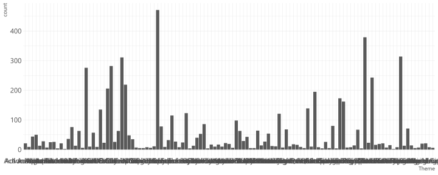
¿Cuántos temas hay?

Muy seguro nos encontraremos con cosas de este estilo donde tenemos que modificar nuestros resultados
¿Cuántos temas hay?
library(forcats)
# creamos variable derivada que agrupe grupe las otras
# categorías que no corresponden a los 7 más grandes
legos <- mutate(legos, Theme2 = fct_lump(Theme, n = 7))
ggplot(legos) + geom_bar(aes(Theme2))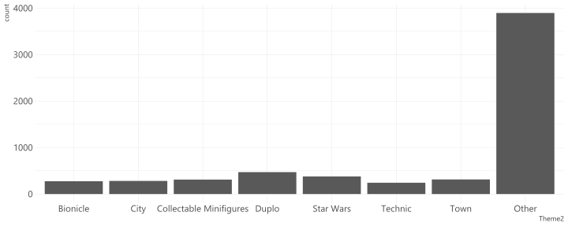
¿Cuáles son los tipos de envoltorio?
## # A tibble: 14 x 2
## Packaging n
## <chr> <int>
## 1 Box 3102
## 2 Not specified 1747
## 3 Polybag 619
## 4 Foil pack 291
## 5 Blister pack 100
## 6 Canister 78
## 7 Loose Parts 72
## 8 Tub 40
## 9 Bucket 36
## 10 Other 36
## 11 Shrink-wrapped 18
## 12 Box with backing card 17
## 13 Plastic box 10
## 14 Tag 6¿Cuáles son los tipos de envoltorio?

¿Y esas etiquetas?

¿Y esas etiquetas?
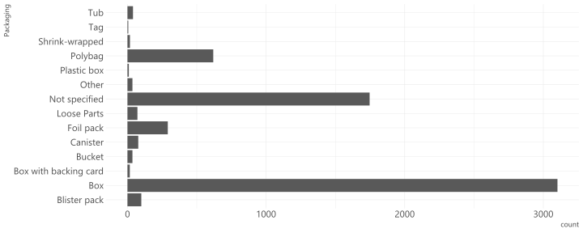
¿Y esas etiquetas?
legos <- mutate(legos, Packaging = fct_infreq(Packaging)) # ordenar
ggplot(legos) +
geom_bar(aes(Packaging)) + coord_flip() # rotar :D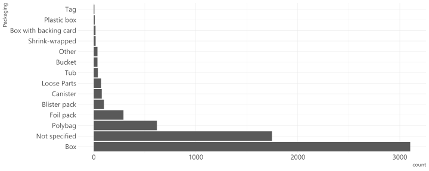
¿Desde cuándo se tenemos registros de sets de legos?*
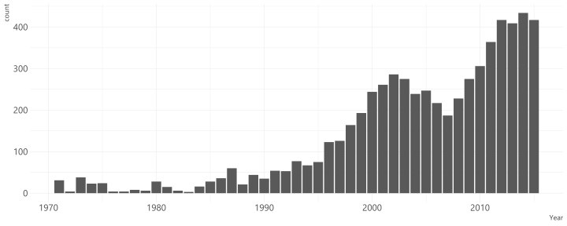
¿Cuántas piezas traen los sets?

¿Cuántas piezas traen los sets?
legos <- mutate(legos, Pieces2 = ifelse(Pieces > 1000, 1000, Pieces))
ggplot(legos) + geom_histogram(aes(Pieces2))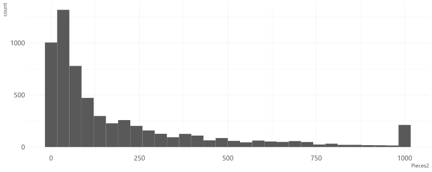
¿Cuántas minifuguras traen los sets?
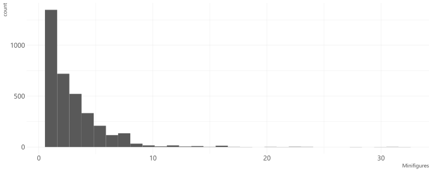
¿Cuántos sets traen más de 25 figuras? ¿Cuáles son?
## # A tibble: 5 x 4
## Name Year Theme Minifigures
## <chr> <dbl> <chr> <dbl>
## 1 The Battle for Helms Deep 2013 Games 28
## 2 Star Wars: The Battle of Hoth 2012 Games 32
## 3 Community Workers 2006 Education 31
## 4 Community Workers 2005 Education 31
## 5 Community Workers 1996 Dacta 30Ejericio
Revisar analisis-exploratorio-datos.r